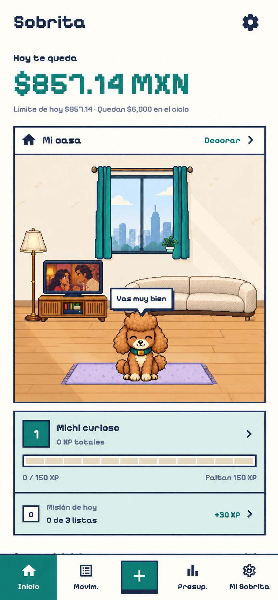
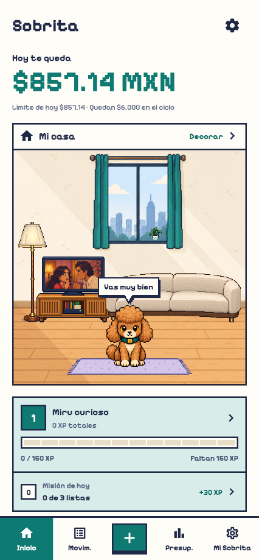
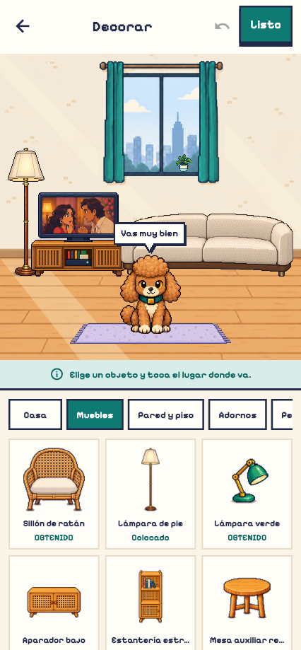

<!doctype html><html lang="ko"><meta charset="utf-8"><title>홈 방 배치 — 시안과 적용 화면</title>
<style>*{box-sizing:border-box}body{margin:0;background:#e9e7e0;color:#232c48;font:16px system-ui}main{display:flex;gap:24px;padding:24px;align-items:flex-start}figure{margin:0;width:426px;flex-shrink:0}figcaption{height:48px;font-weight:600}img{display:block;width:426px;height:auto}small{font-size:12px;font-weight:400;display:block;margin-top:4px}</style>
<main>
<figure><figcaption>선택한 3번 시안<small>원본 비율 유지 · 폭 426으로 표시</small></figcaption></figure>
<figure><figcaption>적용한 홈 화면<small>실제 Flutter 렌더링 · 426 × 919</small></figcaption></figure>
<figure><figcaption>같은 배치의 방꾸미기<small>실제 Flutter 렌더링 · 426 × 919</small></figcaption></figure>
</main></html>